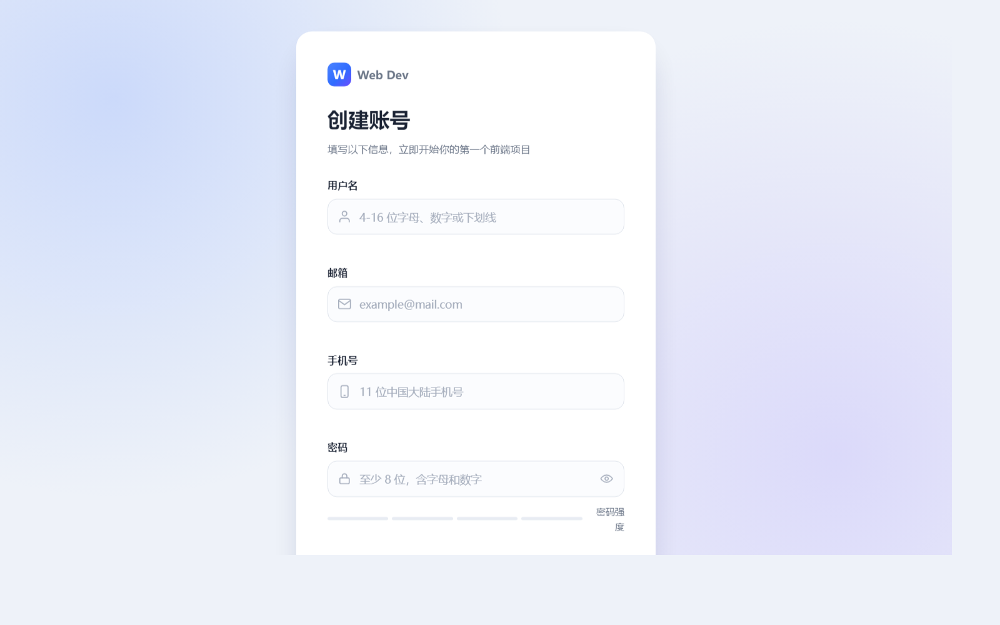
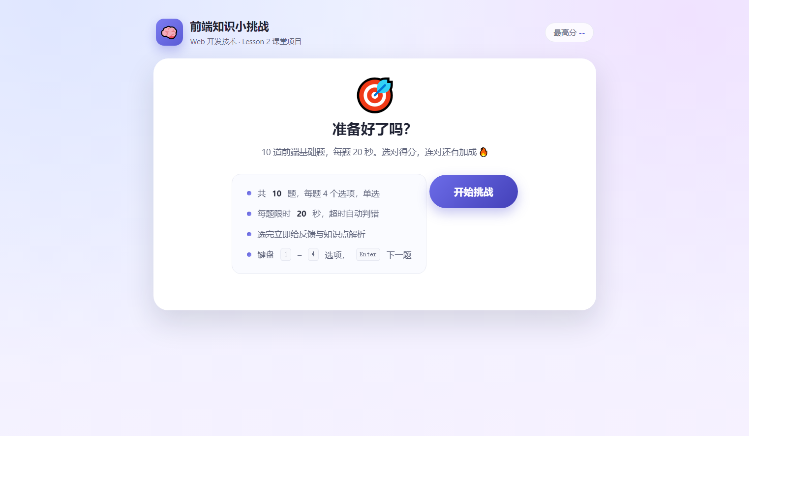
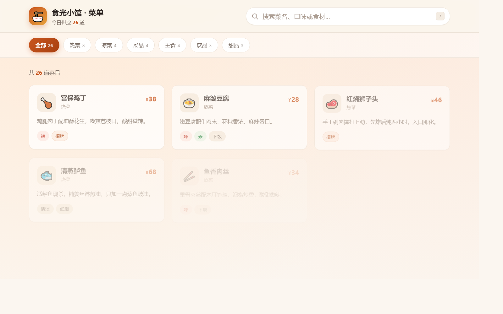
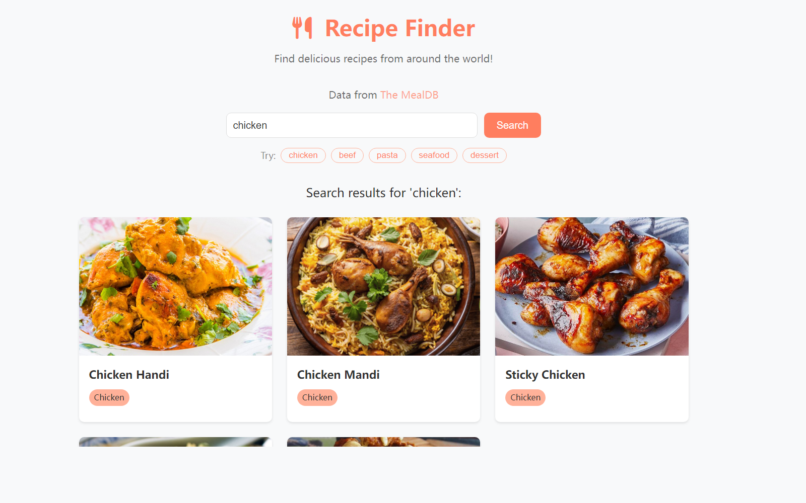

我的作品
三次作业 + 一次加练，点卡片可放大截图，每个作品都有可访问的线上地址。



用到的技术
全部作品不依赖框架，专注把基础打牢。
HTML
语义化标签、表单与无障碍属性、aria-live 反馈区
CSS
变量化设计、Grid / Flex 布局、响应式与动效偏好
JavaScript
DOM 事件委托、状态管理、fetch 异步、localStorage
工程化
Git 版本管理、SSH 协议推送、Vercel / Pages 自动部署
关于这个作品集
它本身也是课程作业：用 HTML + CSS + JS 展示前面的作品。
学习路线
第 1 课注册页 → 第 2 课 Quiz Game 与菜单搜索器 → 接口版加练 → 第 4 课 Vue 框架入门。每一步都留下了可访问的代码与线上页面。
部署说明
每个作品都是独立仓库，推送 main 分支后由 Vercel 自动构建部署；GitHub Pages 作为备用入口，保证任何网络环境都能访问。
联系方式
倪金博 · 2412190727 · 计科 2403
GitHub：@nijinbo916